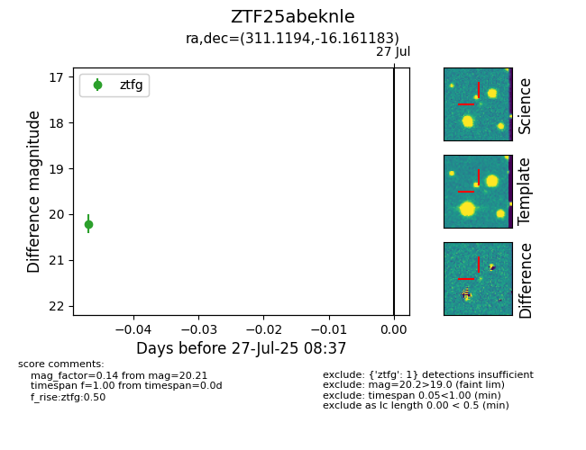

Target ZTF25abeknle at 2025-07-27 08:37, see:
FINK: fink-portal.org/ZTF25abeknle
Lasair: lasair-ztf.lsst.ac.uk/objects/ZTF25abeknle
ALeRCE: alerce.online/object/ZTF25abeknle
alt names
ZTF25abeknle (ztf,fink)
coordinates:
equatorial (ra, dec) = (311.1194,-16.16118)
galactic (l, b) = (30.2009,-32.11706)
photometry
last ztfg=20.21
1 ztfg detections
